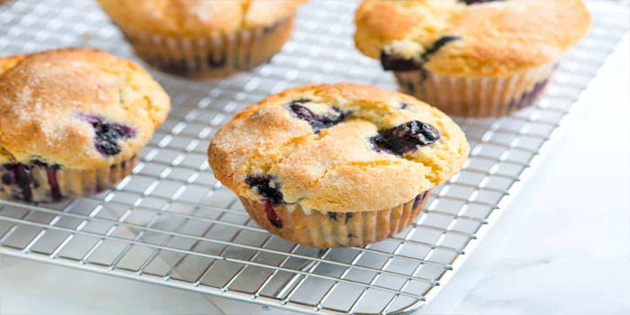

Blueberry Muffin

Ingredients: Cupcake
- 1 1/2 cups (195 grams) all-purpose flour
- 3/4 cup (150 grams) granulated sugar, plus 1 tablespoon for muffin tops
- 1/4 teaspoon fine sea salt
- 2 teaspoons baking powder
- 1/3 cup (80 ml) neutral-flavored oil; canola, vegetable and grape seed are great
- 1 large egg
- 1/3 – 1/2 cup (80 ml – 120 ml) milk; dairy and non-dairy both work
- 1 1/2 teaspoons vanilla extract
- 6 to 8 ounces fresh or frozen blueberries; see note below about frozen berries (about 1 cup)
Time:
- Prem: 10m
- Cook: 20m
- Ready In: 30m
Directions:
- Heat oven to 400 degrees Fahrenheit. For big-topped muffins, line 8 standard-size muffin cups with paper liners. For standard-size muffins line 10 muffin cups. Fill the remaining cups with 1 to 2 tablespoons of water to help the muffins bake evenly.
- Whisk the flour, sugar, baking powder, and salt in a large bowl.
- Add oil to a measuring jug that holds at least 1 cup. Add the egg then fill the jug to the 1-cup line with milk (1/3 to 1/2 cup milk). Add vanilla and whisk to combine.
- Add milk mixture to the bowl with dry ingredients then use a fork to combine. Do not over mix. (The muffin batter will be quite thick — see note below for more details). Fold in the blueberries.
- Divide the batter between muffin cups. (If making big-topped muffins, the batter will come to the tops of the paper liners). Sprinkle a little sugar on top of each muffin.
- Bake muffins 15 to 20 minutes or until tops are no longer wet and a toothpick inserted into the middle of a muffin comes out with crumbs, not wet batter. Transfer to a cooling rack.
- To store, place them in a plastic bag, seal, and store at room temperature for 2 to 3 days. To freeze, wrap them tightly in aluminum foil or place them in freezer bags. Freeze for up to 3 months.